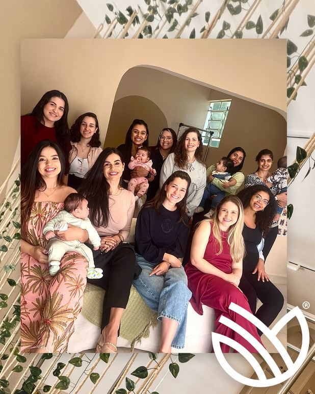
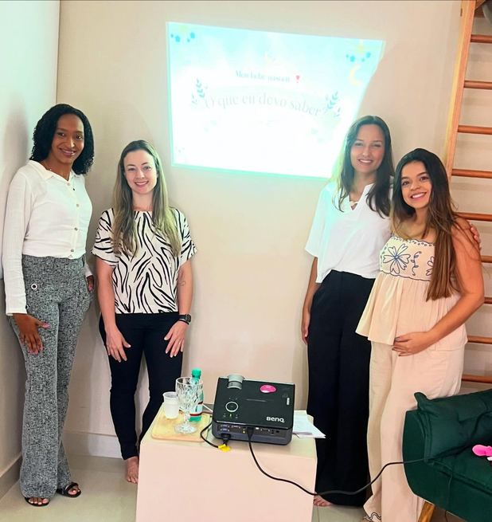

A Fiore além
do estúdio
Acreditamos no cuidado que vai além das aulas. Por isso promovemos e participamos de eventos que levam informação, acolhimento e bem-estar para as famílias de Bauru, especialmente para as futuras mamães.
A Fiore foi parar na TV TEM
Fomos convidados pela TV TEM para falar sobre a importância do Pilates na gestação e mostrar um pouco do nosso jeito de cuidar de cada gestante. Uma alegria enorme poder levar essa informação para ainda mais famílias de Bauru e região.

Encontro sobre diástase e pós-parto
Reunimos nossas alunas para conversar sobre diástase e pós-parto com a fisioterapeuta pélvica Letícia Rodrigues. Teve informação, avaliação, exercícios, café da manhã e muita troca entre mulheres que vivem fases parecidas da maternidade.

Café com Gestantes, 2ª edição
Uma manhã especial reunindo nossas gestantes para falar sobre desenvolvimento motor do bebê no primeiro ano de vida, com as fisioterapeutas pediátricas Nathalia e Tati. Eventos como esse são a essência do Fiore: cuidar das mamães desde a gestação até o pós-parto.
Café com Gestantes, 1ª edição
Um momento só delas: nossas alunas gestantes se encontraram no estúdio para uma manhã de troca e acolhimento, com a psicóloga Elida Garbo e a fisioterapeuta pélvica Dra. Aline, falando sobre os desafios e transformações da gestação. Um encontro que já virou tradição na Fiore.

Curso de Gestantes da Unimed
Já participamos de 3 edições do Curso de Gestantes da Unimed Bauru, representando o Pilates ao lado de outros profissionais falando sobre nutrição, atividade física, sono do bebê, amamentação e pós-parto, sempre com a linguagem ética e acolhedora que é a nossa marca.
É uma alegria contribuir com a preparação de tantas famílias da nossa cidade.
Momentos que ficam
Em breve: fotos e depoimentos de quem viveu esses encontros com a gente.

Fique por dentro dos próximos encontros
Deixe seu contato e avisamos você sobre os próximos eventos, encontros de gestantes e novidades da Fiore.